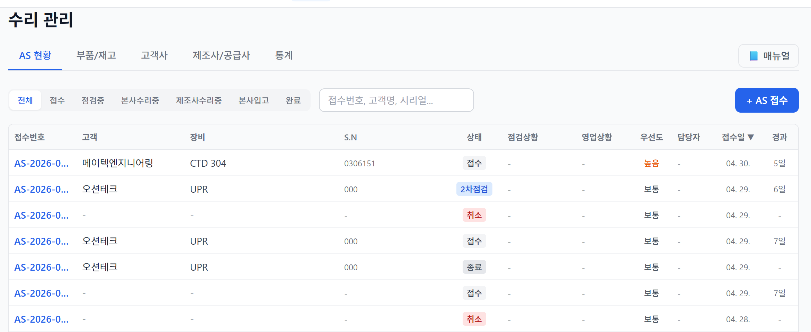
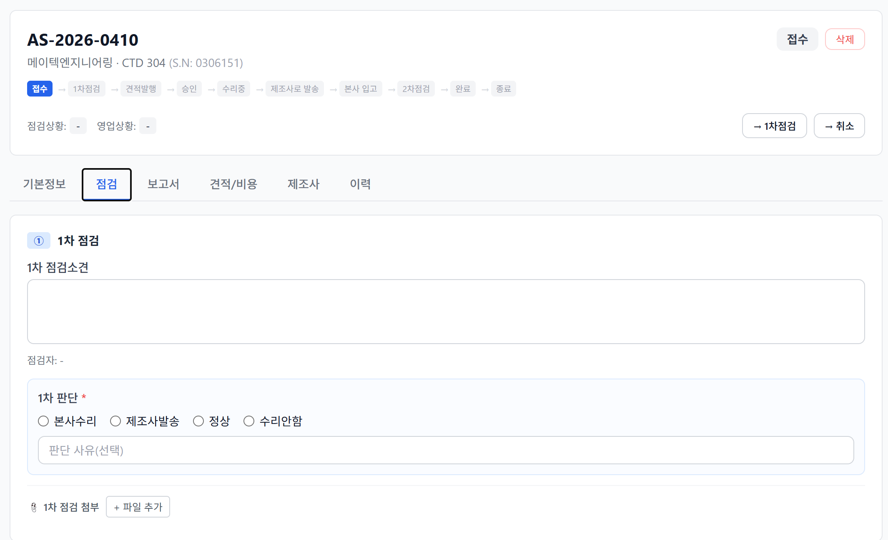
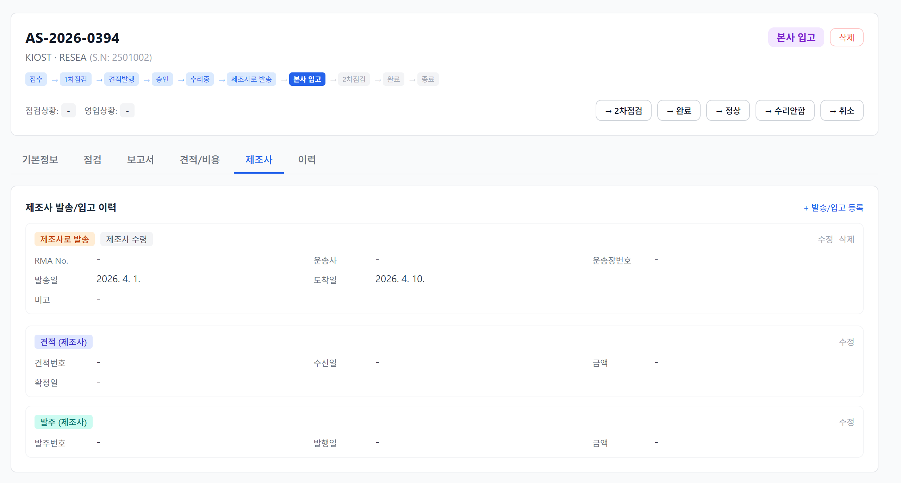
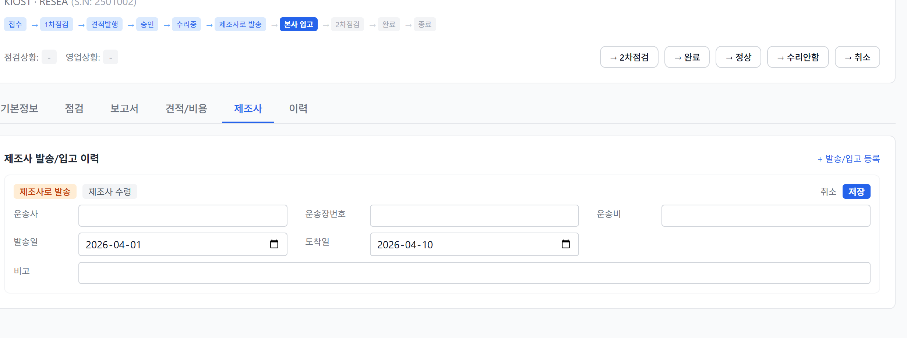

아래 단계를 클릭하면 하단에 화면 설명이 표시됩니다. 설명 안의 📖 매뉴얼 §X → 링크를 누르면 해당 섹션으로 이동합니다.
⬆️ 단계를 클릭하면 화면 설명이 여기에 표시됩니다.
AS(수리) 관리는 고객사에서 입고된 장비의 점검 → 수리 → 반납 전 과정을 ERP에서 추적하는 업무입니다.
| 용어 | 의미 |
|---|---|
| 🔢 AS 접수번호 | AS-YYYY-NNNN 형식. 예: AS-2026-0001 |
| 📊 상태(Status) | 현재 AS가 어느 업무 단계에 있는지 (총 13종, 아래 FSM 참조) |
| ⚖️ 판단(Decision) | 1차/2차 점검 결과. 본사수리 · 제조사발송 · 정상 · 수리안함 4가지 |
| 📦 Shipment | 제조사 발송·본사 입고 이력. 한 AS에 여러 건 가능 |
| 🏷️ RMA No. | Return Merchandise Authorization 번호 (제조사 반품 승인) |
| 접두사 | 의미 |
|---|---|
AS- |
ERP 네이티브 접수 |
SA- |
2026-04-24 엑셀 수리현황 이관 건 (20건) |
수리 관리 메뉴 (/repair) 아래 5개
탭:
| 탭 | 용도 |
|---|---|
| AS 접수 | AS 건 목록 · 신규 접수 |
| 부품/재고 | 수리용 부품 마스터 · 입출고 |
| 고객사 | 고객 정보 (구매/회계 탭과 공유) |
| 제조사/공급사 | 제조사 정보 (구매/회계 탭과 공유) |
| 통계 | AS 현황 대시보드 |

| 필터 | 포함 상태 |
|---|---|
| 전체 | 모든 건 |
| 접수 | RECEIVED |
| 점검중 | INSPECTING_1ST, INSPECTING_2ND |
| 본사수리중 | QUOTED, APPROVED,
REPAIRING |
| 제조사수리중 | SHIPPED_TO_MFG (제조사에 발송돼 아직 돌아오지
않음) |
| 본사입고 | RECEIVED_FROM_MFG (제조사에서 돌아와 2차점검·완료
대기) |
| 완료 | COMPLETED, NO_FAULT,
NO_REPAIR, CLOSED |

헤더는 5개 영역으로 구성됩니다:
| # | 영역 | 표시 내용 | 비고 |
|---|---|---|---|
| 1 | 접수번호 (좌상단) | AS-YYYY-NNNN (굵은 큰 글씨) |
예: AS-2026-0394 |
| 2 | 상태 칩 + 액션 (우상단) | 현재 상태 라벨 + [삭제] 등 |
상태별 색상 코딩 |
| 3 | 부제 | 고객사 · 장비명 · S.N | 예: KIOST · RESEA (S.N: 2501002) |
| 4 | FSM 플로우 시각화 | 10개 상태 chip 가로 배치 — 현재 상태 강조 | [접수] → [1차점검] → ... → [종료] |
| 5 | 전이 버튼 | 현재 상태 기준으로 가능한 다음 상태 버튼 | 버튼은 현재 상태에 따라 동적 (예: [→ 2차점검] [→ 완료] [→ 취소]) |
💡 전이 버튼은 FSM 규칙에 따라 가능한 다음 상태만 표시됩니다 (§3 FSM 참고). 판단(decision)이 미입력이면 일부 전이 버튼은 경고와 함께 비활성화됩니다 (§7.6 참조).
| 탭 | 내용 |
|---|---|
| 기본정보 | 고객 · 장비 · 접수자 · 담당자 · 접수일 · 현재위치 등 편집 |
| 점검 | 1/2차 점검소견, 1/2차 판단(필수), 수리 내용 |
| 보고서 | 정식 점검보고서 (점검 단계별 내용 구조화) |
| 견적/비용 | 내부 견적 · 비용 항목 (고객용) |
| 제조사 | 제조사 발송/입고 Shipment · 견적(Quote) · 발주(PO) |
| 이력 | 상태 변경 로그 · 생성일·수정일 |
💡 더 자세한 화면 설명을 보려면 매뉴얼 상단의 🗺️ 한눈에 보기 차트의 단계를 클릭하세요.
🚫 취소(CANCELLED): 어느 단계에서든 가능한 terminal 상태입니다. 다이어그램 우측 점선 참조.
| 내부 상태 | UI 라벨 | 비고 |
|---|---|---|
| RECEIVED | 접수 | 초기 상태 |
| INSPECTING_1ST | 1차점검 | 점검 진행 중 |
| QUOTED | 견적발행 | 내부 견적 발행됨 |
| APPROVED | 승인 | 견적 승인 |
| REPAIRING | 수리중 | 본사 수리 진행 |
| SHIPPED_TO_MFG | 제조사로 발송 | 제조사 수리 요청 중 |
| RECEIVED_FROM_MFG | 본사 입고 | 제조사에서 돌아옴 |
| INSPECTING_2ND | 2차점검 | 수리 후 재검증 |
| COMPLETED | 완료 | 기술적 완료 |
| NO_FAULT | 정상 | 이상 없음 판정 |
| NO_REPAIR | 수리안함 | 수리 보류 결정 |
| CLOSED | 종료 | 행정 마감 (terminal) |
| CANCELLED | 취소 | terminal |
AS 접수 폼의 고객·자산 드롭다운은 이미 등록된 항목만 보입니다. 처음 들어오는 고객사·장비라면 먼저 등록해야 접수 가능합니다.
| 상황 | 먼저 할 일 |
|---|---|
| 고객사가 목록에 없음 | 1) /repair/customers 진입2) + 고객사 등록 → 회사명·연락처·주소
입력3) 그 후 자산 등록 또는 AS 접수 진행 |
| 장비/자산이 목록에 없음 | 1) /repair/customers/[고객사] 상세 진입2) + 자산 등록 탭 →
제품명·제조사·시리얼·도입일 등 입력3) 그 후 AS 접수에서 자산 선택 가능 |
| 자산을 등록하지 않고 임시 접수 | AS 접수 폼에서 장비 미선택 후
제품명 / 제조사 / 시리얼 텍스트 직접 입력 (이력 추적 약함,
권장 X) |
💡 자산을 사전 등록해두면 수리 이력·도입일·교정 주기·계약 정보가 자산 단위로 누적됩니다. 두 번째 접수부터는 드롭다운 선택만으로 모든 정보 자동 채워짐.
/repair → + AS 접수 버튼
클릭AS-YYYY-NNNN 접수번호 자동
부여접수(RECEIVED)AS 상세 화면 상단 헤더의 [→ 1차점검] 버튼을 클릭하면 상태가 자동 전이됩니다.
상태 전이:
RECEIVED(접수) →INSPECTING_1ST(1차점검)
§3 FSM 참고. 이 시점부터 점검 탭(§5.2)에서 점검소견·판단 입력이 가능해집니다.
점검 탭(두 번째 탭) 접속 후 (v1.3 4-phase 카드 UI):

① 1차 점검소견 (텍스트) — 점검 내용·발견 사항 서술형으로 작성.
② 1차 판단 (🔴 필수, 4지선다) — 본사수리 / 제조사발송 / 정상 / 수리안함
💡 v1.3 변경: 1차 판단 값에 따라 ②③④ phase 카드(본사 수리 / 제조사 수리 / 2차 점검)가 조건부로 자동 표시됩니다. 카드별 첨부 영역 분리.
| 판단 | 의미 | 다음 단계 |
|---|---|---|
| 🔧 본사수리 | 내부에서 수리 가능 | 견적발행 → 승인 → 수리중 |
| 📤 제조사발송 | 제조사 수리 필요 | 제조사로 발송 진행 |
| ✅ 정상 | 이상 없음 (오신고·환경요인) | 정상 → 종료 |
| ⛔ 수리안함 | 고장 확인됐으나 수리 안 함 | 수리안함 → 종료 |
③ 저장 버튼 클릭
고객에게 공식 점검 보고서를 제출할 때 사용: - 보고서번호 · 점검 단계별 내용·결과 구조화 - 점검 소견(점검 탭)은 간단 메모, 보고서는 외부 제출용 공식 문서
1차 판단 = 본사수리 선택 시:
AS 상세 → 견적/비용 탭 → + 견적: -
견적번호 · 노동비 · 부품비 · 운송비 · 비고 - 저장 → 고객 전달용 문서
→ 수리중 버튼 클릭출고
처리견적/비용 탭 → + 비용: | 비용 유형 | 용도 | |—|—| |
DIRECT_EXPENSE | 직접경비 | | LABOR | 공수(인건비) | | OVERSEAS_SHIPPING
| 해외발송비 | | PARTS | 부품비 | | OTHER | 기타 |
→ 완료 버튼: completedAt 기록, 자사 장비의
경우 MaintenanceRecord 자동 생성→ 종료 버튼: closedAt 기록, 자사
장비 상태 → AVAILABLE 복원 (다시 사용 가능)1차 판단 = 제조사발송 선택 시 이 경로.

제조사 탭은 3개 영역으로 구성됩니다:
| # | 영역 | 카드 | 입력 필드 | 액션 |
|---|---|---|---|---|
| 1 | 발송/입고 이력 | 제조사로 발송 (OUTBOUND) | RMA No. · 운송사 · 운송장번호 · 발송일 · 도착일 · 비고 | [+ 발송/입고 등록] [수정] [삭제] |
| 본사 입고 (INBOUND) | 동일 구조 (제조사로부터 입고) | 동일 | ||
| 2 | 견적 (제조사) | 단일 카드 | 견적번호 · 수신일 · 금액(통화) · 확정일 | [수정] |
| 3 | 발주 (제조사) | 단일 카드 | 발주번호 · 발행일 · 금액(통화) | [수정] |
💡 한 AS에 여러 발송/입고 row 가능 (예: 1차 발송 → 부분 입고 → 2차 발송 등). 견적/발주는 각 1건.
① 상단 전이 버튼 → 제조사로 발송 클릭 →
상태 SHIPPED_TO_MFG
② OUTBOUND Shipment 카드가 자동 생성
(상태: 준비중)
③ 카드 수정 클릭 → 상세 입력:

| 필드 | 설명 |
|---|---|
| RMA No. | 제조사 발급 반품 승인번호 |
| 운송사 | DHL/FedEx/대한통운 등 |
| 운송장번호 | 트래킹 번호 |
| 발송일 | 본사 → 제조사 출발일 |
| 도착일 | 제조사 도착일 |
| 비고 | 특이사항 |
제조사로부터 수리 Quote 받으면: - 견적 (제조사) 카드
수정 클릭 - 견적번호 · 수신일 · 금액 ·
통화(KRW/USD/EUR/JPY/GBP) · 확정일
내부 승인 후 제조사에 PO 발행: - 발주 (제조사) 카드
수정 클릭 - 발주번호 · 발행일 · 금액 · 통화
제조사 수리 완료 후 장비가 본사에 돌아오면: - 상단
→ 본사 입고 버튼 클릭 → RECEIVED_FROM_MFG -
INBOUND Shipment 자동 생성 (도착일 = 버튼 클릭 시각) -
필요 시 INBOUND 카드 수정으로 정확한 도착일 수정
점검 탭에서 기록한 1차 판단과 실제 전이하려는 상태가 다를 때, 다음과 같은 확인 모달이 표시됩니다:
1차 판단은 '본사수리'인데 '제조사로 발송'(으)로 진행합니다.
그래도 "제조사로 발송"(으)로 변경하시겠습니까?
| 동작 | 결과 |
|---|---|
| 확인 | 의도된 변경. 그대로 전이 진행 |
| 취소 | 점검 탭으로 돌아가 1차 판단 수정 후 다시 시도 |
💡 이 경고는 사용자 실수 방지를 위한 안전장치입니다. 1차 판단과 실제 워크플로우(전이 대상)가 일치하면 표시되지 않습니다.
제조사 수리 후 본사 재검증이 필요한 경우:
RECEIVED_FROM_MFG 상태) →
→ 2차점검 버튼 클릭INSPECTING_2ND① 2차 점검소견 (텍스트)
② 2차 판단 (4지선다): - 본사수리 / 제조사발송(재발송) /
정상 / 수리안함
| 판단 | 후속 전이 |
|---|---|
| 수리 완료 | → 완료 |
| 다시 제조사 | 제조사발송 판단 저장 + → 제조사로 발송 (2차 왕복) |
| 정상 | → 정상 |
| 수리안함 | → 수리안함 |
completedAt 기록→ 종료만 가능closedAt 기록completedAt 기록→ 종료completedAt 기록→ 종료→ 취소 버튼 사용 가능⚠️ 주의 — 삭제 시 관련 Shipment · 점검보고서 · 견적 · 비용 · 부품출고 이력 모두 연쇄 삭제됩니다. 삭제 전 관련 이력 정리 권장. 진행 중 상태는 먼저 §11.1 취소(CANCELLED)로 전환 후 삭제하세요.
실수로 취소(CANCELLED) 처리된 건을 다시 접수 단계로 되돌리는 기능.
복구 버튼 노출
(CANCELLED 상태에서만)삭제 버튼 왼쪽 (파란색
outline)접수(RECEIVED) 로
복귀1차 PDCA 범위에서는 항상 RECEIVED로만 복구. 직전 단계(예: REPAIRING) 추적은 미지원. 복구 후 사용자가 다시 단계를 진행해야 합니다.
진행 중인 상태에서 잘못된 단계로 넘어간 경우: 1. → 취소
후 §11.3 복구 버튼으로 RECEIVED 복귀 (가장
간편) 2. DB 관리자에게 문의 (특정 상태로 직접 복원 — Admin 수동
작업)
| 역할 | 주요 권한 |
|---|---|
| ADMIN | 전체 권한 + 삭제 |
| MANAGER | 생성·수정·상태 전이 전권, 삭제 불가 |
| OPERATOR | AS 운영 전권 (결재 경유 없음) |
| VIEWER | 조회만 |
✅ 가능: - AS 접수 POST/PATCH · 상태 전이 - 점검보고서 생성·수정 - 견적 생성·수정·상태 전이 - 비용 항목 추가·수정 - Shipment 생성·수정·삭제 (오입력 정정) - 부품 입출고 - 고객사 · 고객 담당자 · 고객 자산 생성·수정
❌ 불가: - AS 접수 · 견적 · 비용 · 부품 · 고객사 / 담당자 / 자산 — 모든 DELETE → ADMIN 전용
원인: 현재 상태가 terminal (CLOSED, CANCELLED)이어서
다음 단계 없음
해결: 마감된 건. 추가 작업 원하면 ADMIN에게 상태 복원
요청
에러: “진행 중인 AS 접수는 삭제할 수 없습니다. 먼저
완료·종료·취소 처리하세요.”
해결: 11.2 참조. → 취소 후 삭제
원인: 과거 버전에서 생성된 건이거나 INBOUND
Shipment가 수동 삭제됨
해결: 제조사 탭에서 + 발송/입고 등록 →
direction=본사 입고로 수동 등록
제조사 탭 아래 쪽에: - 견적 (제조사)
카드 → 수정 버튼 - 발주 (제조사) 카드 → 수정 버튼
❌ 아니요. 판단은 저장만 됩니다. 상태는 전이
버튼 클릭 필요.
불일치 시 확인 메시지 뜨지만 무시하고 진행 가능.
접수번호 접두사: - AS- → ERP 네이티브 - SA-
→ 엑셀 수리현황 이관 (2026-04-24, 20건)
/repair/customers 탭에서 해당 기관 선택| 영역 | 위치 | 용도 |
|---|---|---|
| 내부 견적·비용 (고객용) | 견적/비용 탭 | 고객에게 청구할 금액 |
| 제조사 견적·발주 | 제조사 탭 | 제조사와의 거래 |
두 영역 별도 관리에 주의!
담당자 섹션(고객사 상세) UI:

담당자는 고객사별 CustomerContact 테이블에 한 번만
등록, AS에서는 customerContactName 텍스트로 참조(현재
설계). 동일 인물이 여러 AS 건에 나타나는 것은 정상.
| From → To | 허용 대상 |
|---|---|
| RECEIVED | INSPECTING_1ST, CANCELLED |
| INSPECTING_1ST | QUOTED, REPAIRING, SHIPPED_TO_MFG, COMPLETED, NO_FAULT, NO_REPAIR, CANCELLED |
| QUOTED | APPROVED, CANCELLED |
| APPROVED | REPAIRING, SHIPPED_TO_MFG, CANCELLED |
| REPAIRING | COMPLETED, CANCELLED |
| SHIPPED_TO_MFG | RECEIVED_FROM_MFG, CANCELLED |
| RECEIVED_FROM_MFG | INSPECTING_2ND, COMPLETED, NO_FAULT, NO_REPAIR, CANCELLED |
| INSPECTING_2ND | COMPLETED, NO_FAULT, NO_REPAIR, CANCELLED |
| COMPLETED | CLOSED |
| NO_FAULT | CLOSED |
| NO_REPAIR | CLOSED |
| CLOSED | (없음, terminal) |
| CANCELLED | (없음, terminal) |
| 전이 | 자동 동작 |
|---|---|
| → SHIPPED_TO_MFG | OUTBOUND Shipment 자동 생성 (status=PREPARING) |
| → RECEIVED_FROM_MFG | INBOUND Shipment 자동 생성 (DELIVERED, receivedAt=now), OUTBOUND 미마감 시 DELIVERED로 |
| → COMPLETED | completedAt 기록, 자사 장비·센서 연결 시
MaintenanceRecord(CORRECTIVE) 자동 생성 |
| → NO_FAULT / NO_REPAIR | completedAt만 기록. MaintenanceRecord 생성 안
함 |
| → CLOSED | closedAt 기록, 자사 장비·센서 status=AVAILABLE
복원 |
| → CANCELLED | 별도 동작 없음 |
Shipment 카드가 빈 상태로 남아있을 때
사용자가 “+ 발송/입고 등록” 클릭 후 저장 없이 닫으면 발생.
삭제 버튼으로 제거.
RMA No.가 여러 곳에 나뉘어 기록됨
- 기본정보 하단 Maker Reference No. (legacy) - Shipment
카드의 RMA No. (신규, 선적건별)
⚠️ 중복 주의. 실무상 Shipment.rmaNumber만 사용 권장
판단을 잘못 기록함
점검 탭에서 다시 저장하면 덮어씀. 단, 상태가 이미 전이됐다면 수동 상태
복원 필요(Admin).
docs/02-design/features/수리관리.design.mddocs/04-operation/migration-playbook-수리관리.mddocs/04-operation/2026-04-24-종합검토보고서.md본 매뉴얼은 ERP v1.5.5 기준. UI·FSM 변경 시 업데이트 필요. v1.2 (2026-04-28): 목록 컬럼 정렬 기능 / 취소 → 접수 복구 버튼 / 사전 등록 안내(§4.0) 추가.